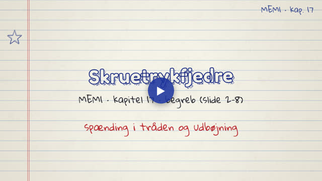
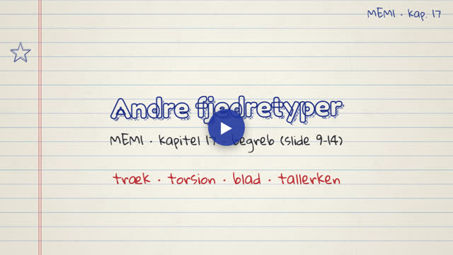
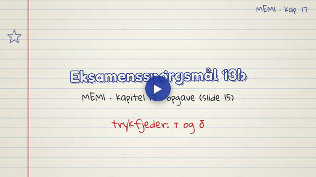

MEM1 · Fjedre. Videoerne tegnes live i din browser og fylder næsten ingenting.
Ét begreb pr. video, i slidernes rækkefølge.

Fjederindeks, Wahls faktor, τmax = Kw 8FD/(πd³), udbøjning og fjederkonstant.

Trækfjedre, torsionsfjedre, bladfjedre, gasfjedre, tallerkenfjedre og bølgefjedre.
Eksempler og eksamensopgaver fra kapitlet, trin for trin.

Eksamensspørgsmål 13b: τmax ≈ 300 MPa, δ = 25,6 mm og k = 7,8 N/mm.